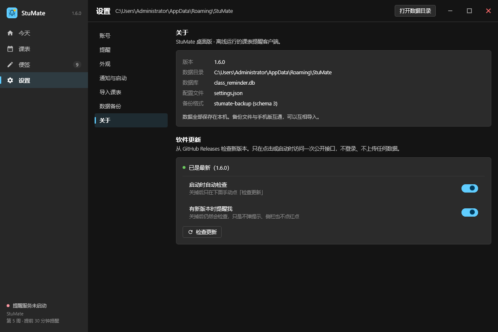
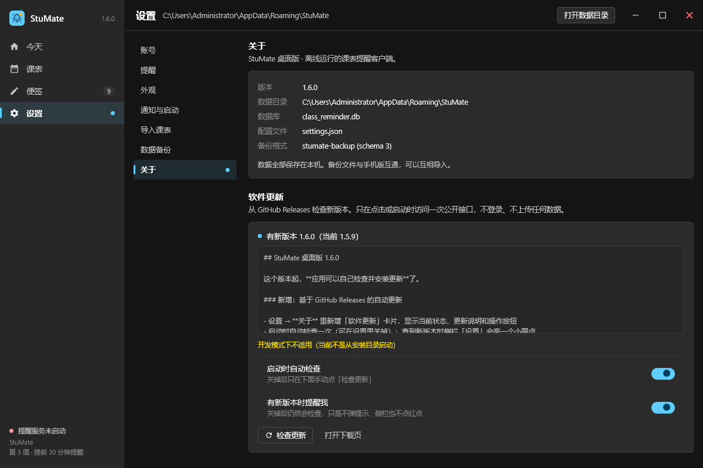

GitHub 自动更新 · 验收报告v1.0 · 2026-10-05 · 桌面端 + 安卓端
需求原话：「自动更新做了吗？基于 Github 的自动更新」。
查下来两端一行更新代码都没有，deeery/StuMate-Desktop 连 Release 都是 0 个。
本轮把「检查 → 下载 → 安装」整条链路在两端做出来并跑通。
一、做成了什么
客户端匿名读 api.github.com/repos/<owner>/<repo>/releases/latest，
比对版本号；有新版本就下载并安装。
桌面端（Windows）
下载 StuMate-patch-<版本>.zip（约 1.9 MB），
就地替换主 jar + 改写 StuMate.cfg，重启即生效。
不需要辅助进程、不需要 .bat。原因见下。
安卓端
下载 StuMate-<版本>-release.apk，校验后交给
系统安装器，用户在弹窗点一下「安装」。
安卓不允许静默安装，这是平台硬约束，不是偷懒。
三条决定设计的硬规则
| 规则 | 为什么 |
|---|---|
| 不内置 token | 两个仓库都是 public，匿名可读（限流 60 次/小时/IP，启动查一次够用）。 客户端会被反编译，把 PAT 打进去等于把密码发出去。 |
| 版本号逐段比较 | 按字符串比的话 1.10.0 < 1.9.0，用户永远收不到更新。
缺失段按 0（1.6 == 1.6.0），解析不出来的段当 0 而不是抛异常。 |
| 静默检查失败不留痕 | 没网、被限流都不是用户此刻该看的报错。用户主动点「检查更新」时才如实回执。 |
jpackage 产物
app/ 有 38 个文件，只有主 jar 的文件名带版本 + hash
（StuMate-Desktop-<版本>-<hash>.jar），其余 37 个依赖 jar 与
runtime/ 跨版本逐字节不变。于是：新 jar 是新文件名，不与正在跑的旧 jar 冲突；
StuMate.cfg 是启动器读一次就放手，不是常驻持有。顺序不能反 先落新 jar，再改 cfg。反了的话中途崩一次， cfg 就指向一个不存在的 jar，应用再也起不来。
二、桌面端验收
「检查」这一步可以直接截图。update 场景会真的去查 GitHub，
窗口标题打了 ready 标记后截图脚本才动手 —— 死等固定秒数会截到「正在检查…」，
看着像功能没做。

v1.6.0，
与本地版本号相等。侧栏「设置」与子导航「关于」上没有圆点。

-PcurrentVersion=1.5.9
把当前版本压低一档，走的是真实的比较分支。更新说明是从 Release body 真实拉下来的；两个开关默认都开； 「开发模式下不适用（当前不是从安装目录启动）」是因为预览进程跑的是
build/classes 而不是安装目录 —— 这正是生产代码该说的话。注意侧栏「设置」和子导航「关于」上都出现了 7dp 小圆点。
「替换」这一步截图截不出来，改做成可断言的
替换本身没有 UI 状态 —— 只有磁盘上多了个 jar、cfg 里少了一行旧名字。
所以新增 dev/UpdateSmoke.kt + ./gradlew updateSmoke：
把真实安装目录复制一份，对副本跑真正的「查 Release → 下载补丁 → 校验 → 就地替换」，
再逐条断言磁盘状态。绝不碰用户正在用的那份安装。
$ ./gradlew updateSmoke ════════════════════════════════════════════════════════════════════════ StuMate 桌面端自动更新冒烟（真实 GitHub Release） 源安装目录：F:\DownloadQQ\stumate-altbuild\compose\binaries\main\app\StuMate 当前版本 ：1.6.0 ════════════════════════════════════════════════════════════════════════ ① 复制安装目录到临时区（绝不碰用户正在用的那份） 把主 jar 改名为旧版本：StuMate-Desktop-1.6.0-3c185cf5c6bbbea450cfbec6faf85f1e.jar → StuMate-Desktop-1.5.0-3c185cf5c6bbbea450cfbec6faf85f1e.jar cfg : 42 行，classpath 行 = app.classpath=$APPDIR\StuMate-Desktop-1.5.0-3c185cf5…jar ② 走真实代码：查 Release → 下载补丁 → 校验 → 就地替换 完成，用时 51093 ms ③ 断言磁盘状态 ✅ 1. app/ 下出现新的主 jar：StuMate-Desktop-1.6.0-3c185cf5c6bbbea450cfbec6faf85f1e.jar ✅ 2. 新旧 jar 不是同一个文件 ✅ 3. cfg 的 classpath 指向新 jar ✅ 4. cfg 行数不变（42 → 42） ✅ 5. 其余依赖行原样保留 ✅ 6. 旧 cfg 备份成 StuMate.cfg.bak ✅ 7. 没留下 StuMate.cfg.new 中间文件 ✅ 8. 新 jar 大小合理（> 1 MB） ✅ 9. 新 jar 里能读到主类 ④ 产物指纹 替换前 jar：StuMate-Desktop-1.5.0-3c185cf5c6bbbea450cfbec6faf85f1e.jar 替换后 jar：StuMate-Desktop-1.5.0-…jar, StuMate-Desktop-1.6.0-…jar 新 jar sha256：dc239733c4ed2958e74e9847534b18a2172fe177f8028b8ce8bfd0ade4050047 ════════════════════════════════════════════════════════════════════════ 9/9 断言通过 ════════════════════════════════════════════════════════════════════════ BUILD SUCCESSFUL in 1m 45s
改名时只换版本号那一段，保留 hash 与
.jar 后缀 ——
replaceAfter() 会把后缀一起吃掉（改名成没有 .jar 的名字，
断言全部失去意义），replace() 只是插入（得到 1.5.0-1.6.0-hash.jar）。
两种错法都踩过。
applyPatch() 的九步防线
| # | 做什么 | 不做的后果 |
|---|---|---|
| 1 | 流式下载到临时目录 | 以后换成整包会炸内存 |
| 2 | 校验 sha256（来自 Release 的 digest） | 下到半截也能装进去 |
| 3 | 只解出 app/<主 jar> 与 app/StuMate.cfg | 补丁包里塞别的东西会被写进安装目录 |
| 4 | 断言 jar 名里的版本 == patch 名里的版本 | 资产传错版本也能过 |
| 5 | 探测 com/example/classreminder/MainKt.class | 塞个空 jar 也能过 |
| 6 | 依赖行逐行比对 | 依赖变了却只换主 jar → NoClassDefFoundError，比不更新还糟 |
| 7 | 落新 jar（新文件名，与运行中的旧 jar 不冲突） | — |
| 8 | 旧 cfg 备份成 StuMate.cfg.bak（只备份一次） | 手动回滚没依据 |
| 9 | 逐行改写 app.classpath=，原子 Files.move | 写到一半崩溃会得到半截 cfg |
三、安卓端验收（模拟器实机，全链路）
起点：模拟器上真实装着 1.4。装一个也走 release 签名、
但自称 1.5 的包（-PstumateVersionName=1.5 -PstumateVersionCode=6），
然后让它去对真实的 v1.6 Release 走一遍完整流程。
INSTALL_FAILED_UPDATE_INCOMPATIBLE ——
那样测的就不是更新链路，而是「签名不匹配」。

真实读取线上 Release。「关于」折叠块默认展开 —— 其余分组是配置项，不动就不用看； 「关于」是新版本来了唯一要去的地方，默认折上等于让刚收到提示的人再点一下。 底部「设置」上出现了小圆点。

1701 KB =
1,742,642 字节，与 Release 上那个资产的
size 完全一致。落点是应用私有外部目录
getExternalFilesDir(DOWNLOADS)，不是公共 Download ——
FileProvider 配的是私有目录，公共目录的文件授不出 uri 权限。

应用把 APK 通过
FileProvider 授出 uri，用
ACTION_VIEW + application/vnd.android.package-archive
交给系统。安卓不允许应用自己静默安装，终点就在这里。背后那行字是应用同时给出的说明：「安装包已交给系统安装器，请在弹窗里点「安装」。」

点「Update」后系统完成覆盖安装。
dumpsys package 实测：versionCode 7 / versionName 1.6
（安装前是 6 / 1.5）。

版本号变成 v1.6，圆点消失，按钮从「下载并安装」变回「重新检查」。 课表与便签数据保留（
versionCode 递增，属正常覆盖安装）。
安卓侧两个必须显式做对的点
| 点 | 做错的后果 |
|---|---|
FileProvider authority 走 ${applicationId} 占位符代码侧 "${ctx.packageName}.fileprovider" |
debug 变体 applicationId 是 com.example.classreminder.test，
与正式版同机共存。写死同一个 authority 就是两个已安装应用声明同一个 provider，
getUriForFile 落到哪个不确定。 |
buildFeatures { buildConfig = true } |
AGP 8 起 BuildConfig 默认不生成，而更新检查要读
BuildConfig.VERSION_NAME（版本号唯一来源，绝不手写字符串）。 |
四、发布侧
| 仓库 | Release | 资产 | sha256 |
|---|---|---|---|
deeery/StuMate-Desktop |
v1.6.0 | StuMate-patch-1.6.0.zip 1,879,279 BStuMate-portable-1.6.0.zip 70,332,325 B |
ecd6b1dd…9d9d37d5992ac7…a16006 |
deeery/ClassReminder |
v1.6 | StuMate-1.6-release.apk 1,742,642 B |
0f25448f…af6775 |
两个 Release 都用匿名请求 /releases/latest 复核过：
tag_name 正确，资产的 digest=sha256:… 与本地算出来的一致 ——
客户端读到的就是这些真数据。
发布工具：两端各一份 tools/release.py（不共用，因为资产形态不同），
提供 pack / notes / publish 三个子命令。
归档名 StuMate-<版本>-release.apk 必须与
UpdateCenter.apkAssetName() 一致 —— 客户端是按名字找资产的，
名字对不上的症状是「检查到有新版本但找不到包」，用户只能去下载页。
五、本轮踩到、值得单独记下来的三个坑
本机装了 SteamTools / Watt Toolkit（
Steamcommunity302），它对
api.github.com 做透明 TLS 中间人，根证书只装进
Windows 证书库，没进 JDK 的 cacerts。症状：浏览器、Python、curl 全部正常，只有 Java 应用报
PKIX path building failed。这类工具在中文用户里装机量很大，而且恰好就是为了访问 GitHub —— 不处理的话，用户看到的只是「点检查更新没反应」。
修法：把 JDK cacerts ∪
Windows-ROOT 倒进
同一个 KeyStore，再建唯一一个 TrustManagerFactory。
踩过的错误修法
SSLContext.init(null, arrayOf(tmA, tmB), r) 不是「两个都试」：
JDK 内部 SSLContextImpl.chooseTrustManager() 只取数组里第一个
X509TrustManager，后面的静默丢弃。拼完照样 PKIX 失败，
现象和没改一模一样。安全性上没有放宽：系统根证书库本来就是这台机器的信任基线， 浏览器 / Electron 应用 / Windows 自身都已经在信任它。 Java 只信自己那份
cacerts 反而是不一致，
只会制造「只有它连不上」的诡异故障。拿不到系统库时退回默认 context，行为不变。
.preview-classpath 指着旧 class 目录项目里同时有
build/ 和隔离目录 F:/DownloadQQ/stumate-altbuild/，
而 .preview-classpath 里存的是前者（旧的），最后一次真正编译却发生在后者。
结果截图看起来一切正常，只是新加的东西一个都不在 ——
很容易得出「改了没生效」的错误结论再去瞎改代码。白跑两轮。修法：
shoot_scenarios.py 加 check_fresh() ——
classpath 里的 class 目录，其最新 .class 必须比
src/main/kotlin 里最新 .kt 还新，不满足直接报错，
不截一张假的图。
实测四次下载坏了两回：一次 HTTP 502、一次 HTTP/2 连接被重置 （
Http2Connection 里抛出来）。国内直连
objects.githubusercontent.com 本来就不稳。修法：给查 Release 与补丁下载加
retrying(times = 3)
（间隔 800 / 1600 ms），重试前把半截文件删掉再写。
没有重试的话，用户点「立即更新」得到「下载失败」，
而他唯一的办法就是再点一次 —— 那不如替他把这一次点掉。
六、已知限制 / 待办
- 1.5 及更早的桌面端 / 安卓端没有更新器，用户必须手动装一次新版本； 从这一版起以后的更新才能自动走。
- 桌面端装在
%ProgramFiles%下需要管理员权限（写app/会被拒）。 代码里已经识别AccessDeniedException并降级为「打开下载页」。 - 新版本改了依赖时补丁包覆盖不了，会降级为「需要重新安装整包」。 这条由依赖行比对把关，不靠人记得。
- 已发布的桌面
v1.6.0早于「坑 1」的修复： 它自带的更新器在装了加速工具的机器上仍会 PKIX 失败。 要让修复真正生效，需要再发一个1.6.1。 - 更新说明（Release body）目前直接渲染纯文本，没做 Markdown 排版。
StuMate · 桌面端 1.6.0（单测 178/178）· 安卓端 1.6 / versionCode 7（单测 167/167）
本轮验收截图 7 张 · 桌面替换冒烟 9/9 · 已发布 Release 2 个